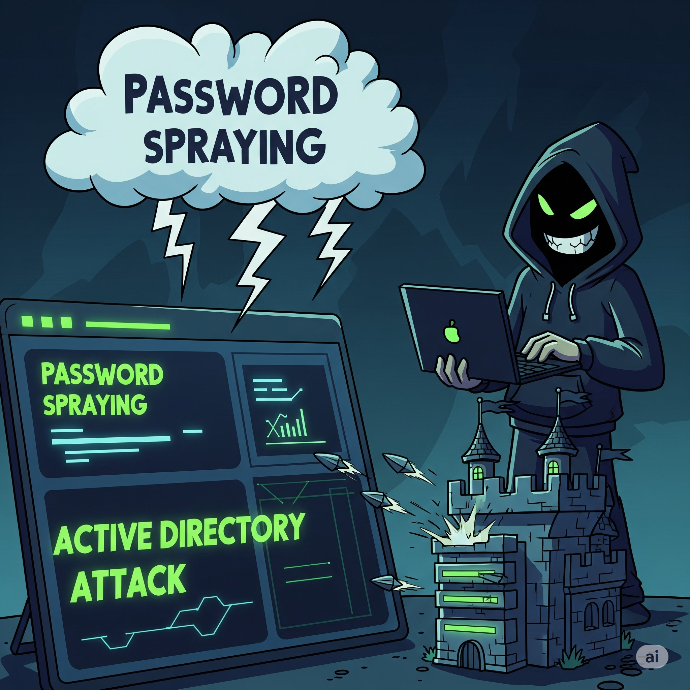

Unmasking the Adversary: A Deep Dive into Active Directory Attack Techniques
Exploring the common and impactful methods used to exploit Active Directory and how to bolster your defenses.

Microsoft Active Directory (AD) stands as the cornerstone of identity and access management for countless organisations globally, including a significant majority of Fortune 1000 companies. However, its extensive and often complex configuration means there isn't a "one-size-fits-all" secure setup, frequently leading to misconfigurations. This inherent complexity and its central role make AD a prime target for cybercriminals, who seek to steal sensitive data, disrupt crucial services, and ultimately gain full control over an organisation's network – effectively obtaining the "keys to the kingdom".
For cybersecurity professionals, whether they are blue team members focused on defence or red team members conducting audits, understanding how Active Directory operates and how it can be exploited is paramount. This post will unpick some of the most common and impactful Active Directory attack methods, explaining why adversaries employ them and providing key takeaways for both understanding and bolstering your defences.
Active Directory Attacks and Mitigation Table
| # | Attack Technique | Description | Top Mitigations |
|---|---|---|---|
| 1 | LLMNR/NBT-NS Poisoning | Spoofing name resolution to capture NTLM hashes | Disable LLMNR/NBT-NS; use strong passwords; monitor responder-like behavior |
| 2 | Password Spraying | Trying common passwords across many users to avoid lockouts | Enforce strong password policies; implement MFA; monitor failed logins |
| 3 | Pass-the-Hash (PtH) | Using NTLM hashes for lateral movement without knowing plaintext password | Disable WDigest; restrict admin logins; use LAPS; patch systems |
| 4 | Kerberoasting | Requesting service tickets and cracking them offline | Use complex service account passwords; prefer GMSAs; monitor Event ID 4769 |
| 5 | DCSync / NTDS.dit Extraction | Simulating DC replication to pull password hashes | Restrict “Replicating Directory Changes” rights; monitor for DCSync behavior |
| 6 | Golden Ticket | Forging TGTs using stolen KRBTGT hash | Reset KRBTGT password twice post-compromise; rotate KRBTGT periodically; log abnormal ticket behaviors |
| 7 | Token Impersonation | Hijacking access tokens from memory to impersonate users | Tiered administration; prevent admins from logging into low-privilege machines; clear tokens with reboots |
| 8 | GPP Cpassword Attack | Decrypting hardcoded passwords from legacy Group Policy preferences | Delete groups.xml files; patch MS14-025; audit SYSVOL for sensitive files |
1. LLMNR/NBT-NS Poisoning
What it is
Local Loop Multicast Name Resolution (LLMNR) and NetBIOS Name Service (NBT-NS) are Windows networking functions designed for name resolution without the need for a Domain Name System (DNS) server. Attackers exploit these by intercepting multicast packets that ask for a hostname's IP address and then, using tools like Responder, responding as if they are the legitimate target, redirecting the network traffic.
Why it's used
This technique allows attackers to obtain sensitive information, including IP addresses, usernames, and password hashes. These captured hashes can then be subjected to offline cracking or used directly in relay attacks to authenticate as the victim. Notably, this attack can be initiated without any prior authentication if an attacker can gather a list of users. It's frequently described as an "easy win" for attackers if an organisation hasn't addressed it.
Key Takeaways
- Look for any machine that is not a domain controller responding to name queries in LLMNR traffic.
- Monitor for NTLM authentication packets that are directed towards unidentified or unknown machines.
- Be aware of typos in LLMNR, DNS, and SMB traffic, as these are common triggers for such attacks.
- The most effective mitigation is to entirely disable LLMNR and NBT-NS if they are not essential within your environment.
- If disabling isn't feasible, consider implementing Network Access Control (NAC).
- Always enforce robust, complex passwords (ideally 14 characters or longer) to significantly slow down hash cracking attempts.
2. Password Spraying
What it is
Unlike traditional brute-force attacks that target a single account with numerous password attempts, password spraying involves testing a single, common password across a large number of accounts. Tools like Kerbrute are frequently employed for this purpose.
Why it's used
This method is favoured by attackers because it helps to evade account lockout policies that are designed to thwart brute-force attacks, thereby allowing the attacker to remain undetected for longer. A successful "hit" from a password spray can provide an immediate foothold, enabling further enumeration and attacks within Active Directory.
Key Takeaways
- Enforce a minimum password policy of at least 12 characters, with recommendations often extending to 14 or more for enhanced security.
- Implement multi-factor authentication (MFA) wherever possible, as it significantly reduces the risk of account compromise even if credentials are leaked or stolen.
- Continuously monitor failed login attempts for unusual patterns.
- Prohibit the use of common passwords or patterns that relate to business names, domain names, or personal information.
3. Pass-the-Hash (PtH) with Mimikatz

What it is
Pass-the-Hash is a technique where an attacker authenticates to a remote server or service using a stolen password hash (specifically, an NTLM hash) rather than the cleartext password itself. Mimikatz is a powerful and widely recognised open-source tool that facilitates this by extracting credentials, including hashes, from the memory of Windows systems (e.g., the LSASS process).
Why it's used
PtH allows for lateral movement and privilege escalation across a network without the need to crack the stolen password hashes into plaintext. This is often enabled when IT professionals, through their regular duties, inadvertently leave privileged account hashes in system memory by logging into user machines or using Remote Desktop Protocol (RDP).
Key Takeaways
- Apply relevant Microsoft patches and disable the WDigest protocol to prevent plaintext passwords from being stored in the Local Security Authority Subsystem Service (LSASS) memory.
- Deploy Microsoft LAPS (Local Administrator Password Solution). This is crucial for ensuring that local administrator passwords are random and unique across all endpoints, significantly hindering lateral movement.
- Reduce the number of services running with local administrator privileges, as administrator rights are generally required for tools like Mimikatz to access and dump credentials from memory.
- Enforce SMB signing across the domain to prevent the interception and relaying of NTLM authentication messages.
- Utilise Privileged Access Workstations (PAWs) for administrators. These dedicated, secure workstations prevent privileged credentials from residing on less secure user machines.
4. Kerberoasting

What it is
Kerberoasting is a post-exploitation technique where attackers target service accounts within Active Directory by requesting a Kerberos Service Ticket (TGS) for a registered Service Principal Name (SPN). The requested TGS is encrypted using the SPN's associated password hash, which the attacker can then extract and attempt to brute-force offline to recover the cleartext password. Common tools for this attack include Impacket's GetUserSPNs and Rubeus.
Why it's used
Service accounts are attractive targets because they often have weak, easily guessable, or infrequently changed passwords. If a compromised service account happens to hold elevated privileges (such as being a member of a privileged group), gaining its password can lead directly to domain dominance.
Key Takeaways
- Enforce long and complex passwords (at least 25 characters) for all service accounts.
- For privileged services, consider implementing Group Managed Service Accounts (GMSAs). These accounts automatically manage and rotate complex passwords, significantly enhancing security.
- Regularly identify and remove any unused service accounts.
- If your environment supports it, disable RC4 encryption for Kerberos and enforce the use of stronger AES algorithms.
- Monitor domain controller logs for Event ID 4769. Specifically, look for events where the "Ticket Encryption Type" is
0x17(RC4), and the account name does not end with a$, as this often indicates a user account request.
5. NTDS.dit Extraction / DCSync

What it is
Active Directory stores all domain information, including highly sensitive user password hashes, within the NTDS.dit file, located by default at %SystemRoot%\ntds\ on a domain controller. Attackers who achieve administrator access to the domain controller can extract this file. DCSync is a specific feature within tools like Mimikatz that simulates the behaviour of a legitimate domain controller to request and retrieve password data through standard domain replication protocols.
Why it's used
The primary goal is to obtain all user password hashes for offline cracking or to perform Pass-the-Hash attacks. This allows attackers to operate independently of the Active Directory environment once the file is exfiltrated. DCSync attacks are particularly insidious as they mimic legitimate replication traffic, making them more difficult to detect.
Key Takeaways
- Minimise the number of accounts with logon privileges on domain controllers.
- Implement strict physical access controls for domain controller machines.
- Securely protect Active Directory database backups and virtual machine clones through encryption and access controls.
- Exercise extreme caution when delegating "Replicating Directory Changes" rights, as these permissions are frequently abused.
- Enable comprehensive logging for domain controllers and ensure logs are monitored.
6. Golden Ticket Attacks

What it is
A Golden Ticket is a forged Kerberos Ticket Granting Ticket (TGT). It is created using the stolen NT hash of the KRBTGT account, which is the special Kerberos ticketing account. Once created, this forged TGT grants an attacker complete access to any resource or system within the entire domain. Mimikatz is the primary tool used to generate and inject these golden tickets.
Why it's used
This attack provides highly persistent, stealthy, and extensive access across the entire domain. Golden tickets can be generated offline, assigned an arbitrary lifetime (defaulting to 10 years), and resetting the password of the impersonated account does not invalidate the ticket.
Key Takeaways
- The absolute top priority is to protect the
KRBTGTaccount. - Regularly reset your
KRBTGTaccount password at least once a year, and immediately after a potential compromise. It is critical to use Microsoft's official scripts for this process. Resetting the password twice invalidates its entire password history. - Minimise the number of accounts with highly privileged access, such as Domain Admins, Virtual Infrastructure Admins, and Backup Admins.
- Be aware that Windows event logs do not inherently distinguish between legitimate and forged TGTs, making direct detection challenging. However, anomalies in certain event IDs might indicate their use.
7. Token Impersonation

What it is
When an attacker gains a shell on a machine, they can use tools, such as the Incognito module within Metasploit, to impersonate existing delegate tokens found in the system's memory. Delegate tokens are created when a user logs onto a machine or establishes an RDP session.
Why it's used
This attack is highly effective if a domain administrator has logged into a compromised machine. Their delegate token may persist in memory until the machine is rebooted, allowing the attacker to impersonate them and inherit their privileges, facilitating significant privilege escalation and lateral movement.
Key Takeaways
- Implement strict account tiering: Domain administrators should strictly limit their logins to only domain controllers and other high-security administrative hosts.
- Restrict local administrator access: If end-users are not local administrators on their machines, it becomes significantly harder for an attacker to perform token impersonation.
- Encourage regular machine reboots to clear tokens from memory, reducing the window of opportunity for attackers.
8. Group Policy Preferences (GPP) / Cpassword Attacks

What it is
Historically, Group Policy Preferences (GPP) allowed administrators to embed encrypted credentials, known as Cpassword, within XML documents stored in the sysvol folder of Active Directory. A critical vulnerability arose when the encryption key for these Cpasswords was publicly released.
Why it's used
While this vulnerability (MS14-025) has since been patched, if an administrator configured GPP credentials before the patch was applied, the encrypted passwords remain vulnerable. These credentials often belong to domain administrator accounts, offering a direct path to high-level access, as any domain user typically has read access to the sysvol folder.
Key Takeaways
- Proactively search for and remove any
groups.xmlfiles within thesysvolfolder that contain Cpassword entries. - Ensure that all policies which might have stored embedded credentials prior to the MS14-025 patch are thoroughly remediated.
- Utilise specific tools like Metasploit's
smb_enum_gppmodule or PowerShell scripts to scan for this vulnerability.
Conclusion
Active Directory's fundamental role in identity and access management means its security is non-negotiable. Adversaries continuously exploit both common misconfigurations and inherent features of AD to achieve their objectives. Therefore, implementing a layered and proactive approach to security is paramount.
Organisations should prioritise:
- Enforcing strong, complex, and regularly changed password policies for all accounts, especially privileged ones.
- Adhering strictly to the principle of least privilege, ensuring users and service accounts only have the minimum necessary permissions.
- Implementing robust monitoring and alerting mechanisms to detect suspicious activity, such as unusual login attempts or changes to sensitive objects.
- Conducting regular security audits and penetration tests (like red team exercises) to identify and remediate weaknesses before malicious actors can exploit them.
By understanding these prevalent attack vectors and implementing comprehensive defensive strategies, organisations can significantly enhance their Active Directory security posture and cyber resilience.
Join the Discussion
üí¨ Have you encountered AI exploits?
üõ°Ô∏è Which mitigation strategy is most effective?